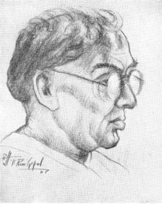

The
passing away of Sri T. Prakasam, the veteran leader of Andhra, at the ripe age
of 86, marks the end of a momentous epoch in the political evolution of South
India in particular and India generally. Daring by nature, Prakasam was cast in
a heroic mould with a seemingly forbidding exterior which scared away people of
lesser stature. But the heart behind that rugged exterior was of purest gold,
and only those who worked under his shadow could feel the impact of that great
warmth and cordiality which lay enshrined in it and flowed spontaneously like
pellucid water from a perennial spring. The intensity of his emotions was only
equalled by the adroitness with which he could control and canalise them in
furtherance of his mission.
But
there are also others who hold the view that Prakasam was only a mere visionary
and that he was more an iconoclast than a builder. To a superficial observer,
this may appear somewhat plausible, but on a closer scrutiny, it will be found
to be baseless. Prakasam was a visionary all right, a dreamer if you like, but
the basic foundation for his convictions and faith was his intense love for his
Motherland. If he could not realise his objective during his life-time, it was
not his fault; the time-spirit was working the other way. Yes, Prakasam
was an iconoclast and a revolutionary, for be never believed to shibboleths and
slogans and blind worship, either in religion or politics,
and he aimed at breaking through that meek subservience to outworn ideas and
restoring reason to its place. Prakasam’s place in the Indian political plane
cannot be assessed either in terms of triumph or disappointment. That he was a
soldier of magnificent courage ready to lay down his life in defence of the
honour of his country nobody can dispute.
In
this article, however, I would like to refer to Prakasam as a journalist. I
have had the rare privilege of coming into close contact with him during my
long association with Swarajya, (Prakasam’s creation), as member of its
editorial staff, as its Special Correspondent at Bangalore and finally as its
Editor for a few but hectic months at Madras. I consider those days as the best
and most momentous in my journalistic career of forty five years, and even
today after retirement and taking a retrospective view of things done or
allowed to slip, I do not for one moment regret that I had the honour of being
associated with Swarajya though from a material standpoint it was not
attractive.
The
thing that attracted and almost enslaved us all was the dynamic personality of
Prakasam and the example he set before us by his own irrepressible energy and
infinite capacity for work. Neither day nor night made any difference to him;
and sometimes we, many years younger to him, felt we were being taxed too much
physically. But he never thought of others’ physical discomforts, because he
himself shared them with us and therein lay his real greatness.
I
can recall several instances in which Prakasam made us feel
ashamed of our love of ease and comfort. One night, at about 10 P.M. he motored
straight from Madras to my residence in Bangalore and asked me to get ready for
a tour in Tumkur District and said: ‘Don’t you think this trip is long overdue?’
‘Yes, Sir,’ I replied, not anticipating what was to come. ‘Then get ready to
come with me. I shall return from the hotel in an hour’s time and then we can
start off,’ he said. I was somewhat against night journey and suggested we
might start early next morning. Shaking me by the shoulder, he said: ‘What can
we do if we start next morning? Most of the time will be taken in covering the
distance and we will miss our objective. The best thing is to cover the
distance during the night and to get through our work in daytime. So get ready
and I will be back in an hour.’ So saying he left and I had no alternative but
to get ready. When we reached Tumkur town past midnight, we were told that the
gentlemen (District Board President) whom Prakasam wanted to meet was camping
some fifty miles away. I suggested we might take rest in the traveller’s
bungalow and leave early next day. Prakasam listened and with a smile at me he
directed the chaffeur to drive on to the District Board President’s camp. It
was nearing 3 A.M., when we reached that place. Prakasam found the President
sound asleep in his camp but managed to wake him and fix up a tentative tour.
Next morning, after a hurried Chota-hazri, we were on the road again. I cannot
now remember how many miles we covered, how many places we visited and how many
persons we saw. After three days of hectic tour from village to village,
without caring for food or comfort, we returned late in the night to Bangalore.
As he dropped me at my house, he suggested a trip to Mysore and Hassan next
day. I pleaded for some respite, as I was very much worn out for want of sleep
and food. As a concession, he replied with a laugh ‘You fellows are no good.
Then you may take some rest. We shall have the Mysore programme next month. I am
leaving straight for Madras.’ I slowly put in he might take rest for a day and
then start. He simply laughed away my suggestion and left immediately for
Madras. Such was the man: work for a cause held dear by him was all that
mattered and physical discomforts were secondary and had no terrors for him. In
these and various other ways, at the risk of his health and comfort, he tried
to place Swarayja on a solid foundation and gave his all to keep its
flag flying.
Though
he could not realise his objective, due to causes beyond his control and
perhaps also owing to lack of organisational strength, essential for a daily
newspaper, the way in which he worked for its consummation until he himself saw
the futility of his efforts must compel and command everybody’s admiration; and
from out of the sacred ashes of Swarajya there arose in prolific variety
and abundance an iridescent vision, a stirring concept, a splendid tradition
and a new epic in human endeavour, in the rearing of which Prakasam neither
spared himself nor others, His was an outstanding example of supreme sacrifice,
of relentless search for forces of harmony and cohesion, and of un-flinching
faith in the mission for which he lived and died. There were occasions when our
nerves were at breaking point; a few left the storm-tossed ship but in no case
had anybody left with any rancour in his mind. Only it was difficult for some
of us to rise equal to the stature of Prakasam. Most of us lacked his dynamic
energy and apostolic faith and were sometimes unable to share his optimism; and
if we failed to come up to his standards, it was not for lack of love or
loyalty to him but because of our preference for ease and comfort.
I
would like to recall one memorable incident which showed the greatness and
magnanimity of Prakasam. When G. V. Krupanidhi bade farewell to Swarajya, almost
its last tenacious and loyal Editor to leave the ‘burning deck’, I was recalled
from Bangalore to take up the editorship of the paper. It was a command I could
not disobey, though I hesitated to step into the shoes of the versatile
Krupanidhi. The paper was run under precarious conditions and there was despair
all round. But Prakasam assured me he would make perfect arrangements for
running the paper on business lines and left immediately on tour. I was left
alone to manage the paper with one apprentice to help me and another to look
after the business side. The latter was Manager-cum-Cashier, but only he had no
cash to dole out. The paper dragged on its precarious existence for about two months
with the greatest difficulty and things began to deteriorate rapidly. I had to
live practically in the office itself, while my family was stranded at
Bangalore. At that time I had a chance in The Hindu as Bangalore
correspondent, though I could not easily persuade myself to grab at the
sweep-stake that came in my way. At last I had to make a choice but
could not get at Prakasam who was on tour. Finally, I made up my mind to
leave Swarajya which I loved very dearly and which was then in the last
stages. A few days later, the paper suspended publication.
A
month after I joined The Hindu, Prakasam called at my house in
Bangalore and asked me peremptorily to start for Madras along with him to
re-start Swarajya. Further, he assured me that he had made fool-proof
arrangements for running the paper smoothly thereafter and that I should not
worry for money any more. I was wavering between my love and high regard
for Prakasam and the generous opening I had in The Hindu. Prakasam
insisted on my coming to Madras and no appeals of mine would convince
him to the contrary. While he would not budge an inch from his position, I had
to use all my ingenuity to persuade him to leave me free for some time.
In the end, after four hours’ talk, Prakasam relaxed a bit and said slowly: ‘I
can see your standpoint. You fellows got fed up with my adventure. See
what Krupanidhi and Subba Rao have done. I realised you all went through hell.
I release you now on your definite promise that you would come back to me after
I place Swarajya on a sound footing. When that call comes, be ready to
start. No excuses then. Remember that.’ I promised him that I would be ready to
serve under him on any salary he could give, provided the paper was run on business,
not emotional, lines. That very night he motored back to Madras and Swarajya
had one more flicker before it finally disappeared from the horizon
altogether, and I was not called upon to perform the obsequies.
The
failure of Swarajya could not be construed as a personal failure of
Prakasam by any means. He did not start the paper with the object of
making any profit out of it. His sole objective was to spread the message of
the Congress through its columns without fear or favour, and he gatherd round
him men of tested integrity and intellectual calibre and set an example of high
thinking and plain living. The success of a paper depends not solely on
personalities but mostly on its management and sound financial backing.
Prakasam threw his whole fortune into this adventure besides tapping all the
resources he could commandeer, and even then the paper could
not survive. It must, however, be said to Prakasam’s everlasting credit that he
made superhuman efforts to re-vitalise Swarajya at every
stage, but no newspaper could thrive long merely on emotional excitement.
To
those who came under his hypnotic spell, Prakasam was like a father, sometimes
rough and exacting in his demands of us, but lovable all the same. During the
last decade of Swarajya’s existence, I came to know him very intimately
and I used to feel overawed by the volcanic energy he displayed in everything
he did. Food, sleep, and rest were minor things to him: work in furtherance of
his mission was his only concern and anything else did not matter. He had the
zeal and fervour of a missionary, the courage of a warrior, and the simplicity
of a child. He was blessed with unique qualities which made him a hero and an
object of veneration to one and all.
Though
he was immersed in public work, he struck me as an intensely religious man
without trumpeting his faith, as some do, and his philosophy was the philosophy
of the Gita. It was enough for him that he was in the fray and he would
not bother about the results in the true Gita spirit. He had developed
and lived a philosophy in which defeat and success were inseparable shades of
public service. In fact, he was a shining example of a ‘Nishkama Karma Yogi.’
His spirit and enthusiasm and dauntless courage rose to great heights in a
crisis when lesser men would have quailed before it. He had the dash and energy
of a Titan: he championed a cause in the same grand manner. He was beloved of
both gods and men.
Prakasam
is gone. When comes another like him?